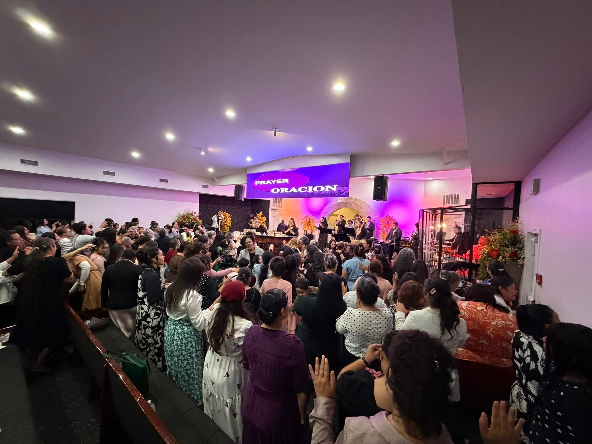
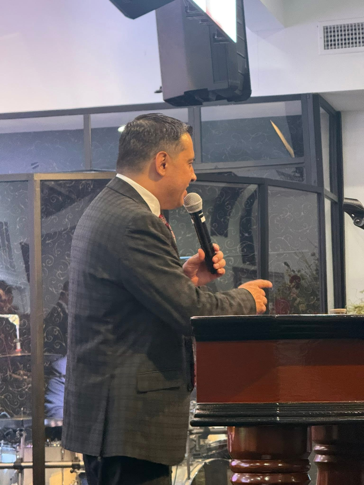

Un lugar para adorar, crecer en la fe y experimentar la presencia de Dios.
MartesEducación Cristiana7:00 PM
ServicioAdoración y Palabra7:15 PM
Ubicación6989 Holly StreetCommerce City, CO
Vida en Pan De Vida
Adoración, bautismos, familia y propósito
Cada semana adoramos juntos, celebramos nuevas vidas en Cristo, invertimos en nuestros jóvenes y servimos a nuestra comunidad.

Bienvenida pastoral
Hay un lugar para ti aquí
Nos honra que visite nuestro sitio. Si está buscando esperanza, una familia espiritual o un lugar para crecer en Cristo, le damos la bienvenida a Pan De Vida.
Conoce nuestra iglesia